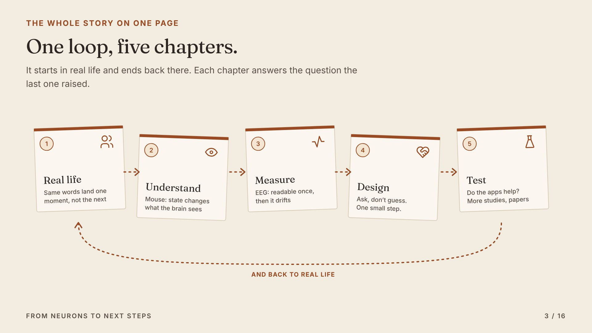
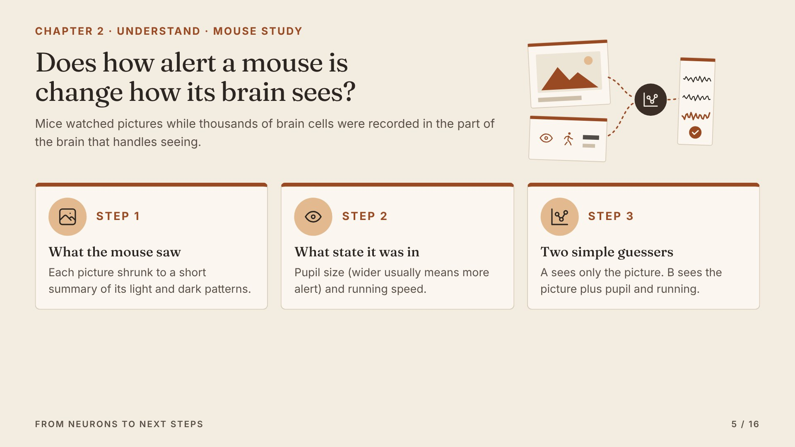
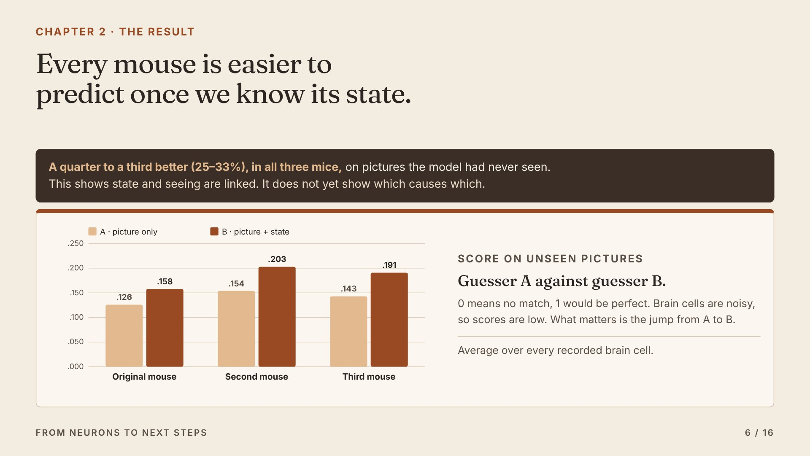
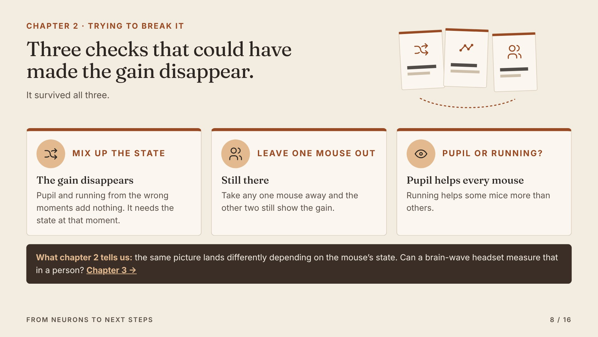
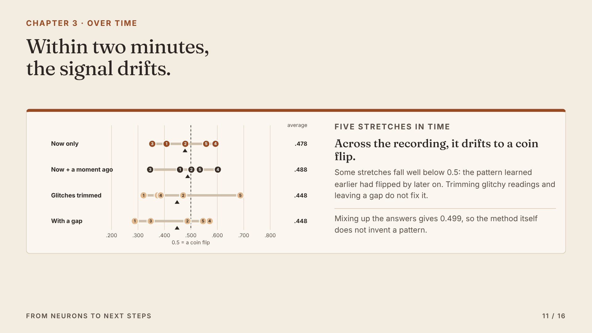
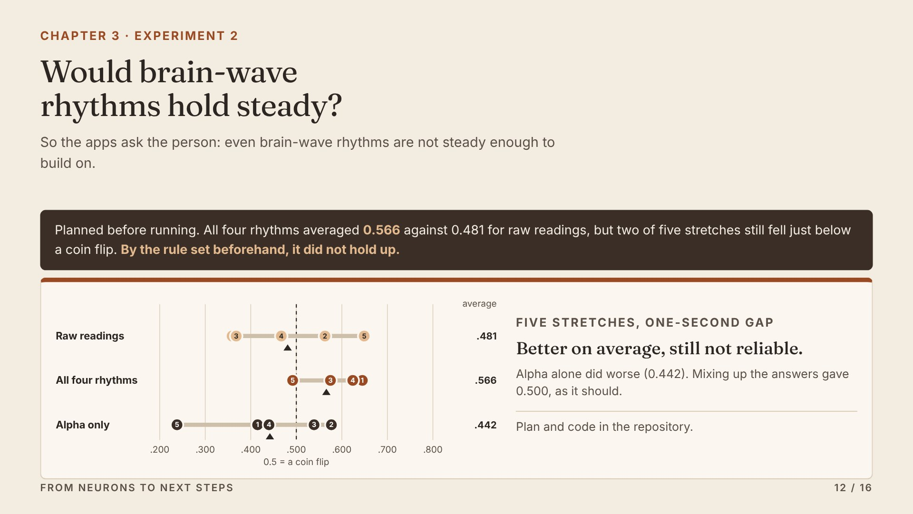
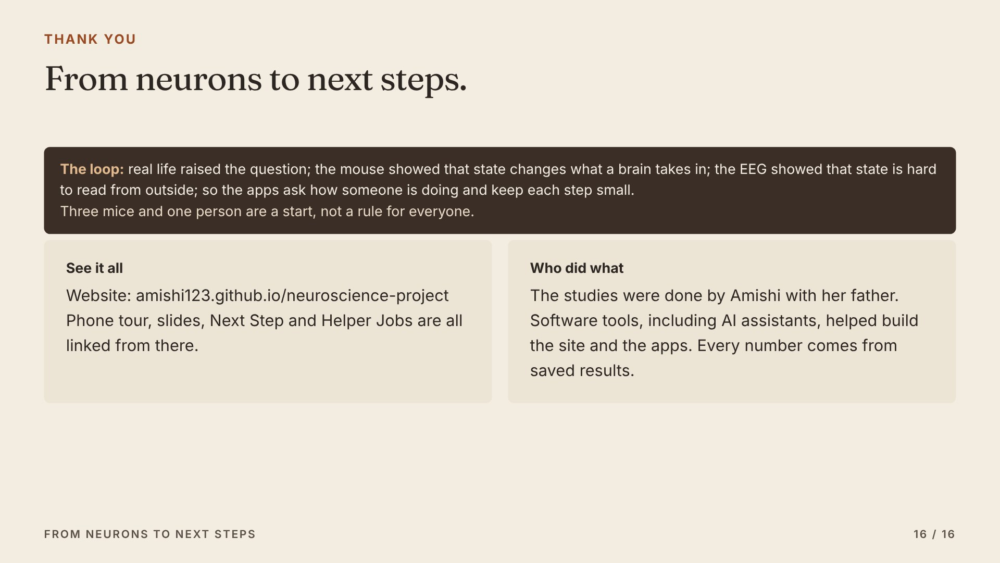

← For Amishi
Step 4 of 4 · Optional · Your voice
Read it the way you would say it.
16 short parts, one per slide, about four and a half minutes in all. Record on a phone. Any part you skip keeps the computer voice, so you can do a few at a time.
Before you start
Where
A quiet room
Soft things around you, like a bedroom, sound better than a kitchen.
How
Your phone’s voice memo app
Hold it about a hand’s width away. One recording per part.
What to say
Change words that are not yours
Keep the meaning and the numbers the same.
When done
Name and send the files
Name each one by its number, 01.m4a to 16.m4a, and send them to your dad.
The 16 parts
Each part is read while its slide is on screen.
 01 · From neurons to next stepsFrom neurons to next steps. This started at Pragnya, where Amishi volunteers with neurodivergent children, and follows one question from real life into the lab and back out again: two studies with public brain recordings, the two apps their findings shaped, and where the work goes next.Save as 01.m4a
01 · From neurons to next stepsFrom neurons to next steps. This started at Pragnya, where Amishi volunteers with neurodivergent children, and follows one question from real life into the lab and back out again: two studies with public brain recordings, the two apps their findings shaped, and where the work goes next.Save as 01.m4a 02 · What we found, in three sentencesHere is the whole answer in three sentences. One: In mice, brain cells reacted differently to the very same picture depending on how alert the mouse was. Two: A brain-wave headset on a person could not reliably tell even whether their eyes were open or closed. Three: So a helpful app should not try to read your brain: it should ask how you feel and show one small step at a time. The rest of this talk shows the evidence for each one.Save as 02.m4a
02 · What we found, in three sentencesHere is the whole answer in three sentences. One: In mice, brain cells reacted differently to the very same picture depending on how alert the mouse was. Two: A brain-wave headset on a person could not reliably tell even whether their eyes were open or closed. Three: So a helpful app should not try to read your brain: it should ask how you feel and show one small step at a time. The rest of this talk shows the evidence for each one.Save as 02.m4a
03 · The loopHere is the whole story. Real life raised a question. A mouse study helps us understand it. An EEG study asks whether we can measure it in a person. The answers shape the design of two apps. And the last step tests the apps back in real life.Save as 03.m4a 04 · Chapter 1, real lifeThis is where it started: at Pragnya, where one child was dancing while another covered their ears in the same room. That made us ask whether how alert or tired a brain is changes what gets in.Save as 04.m4a
04 · Chapter 1, real lifeThis is where it started: at Pragnya, where one child was dancing while another covered their ears in the same room. That made us ask whether how alert or tired a brain is changes what gets in.Save as 04.m4a
05 · Chapter 2Scientists shared recordings of thousands of brain cells from mice watching pictures. We built two simple guessers. Guesser A only knows the picture. Guesser B also knows how wide the pupils were and how fast the mouse was running. Both are tested on pictures they have never seen.Save as 05.m4a
06 · Chapter 2 resultIn every mouse, guesser B wins. The scores look small because single brain cells are noisy, so the thing to look at is the jump from A to B: a quarter to a third better. That is a link, not proof of cause.Save as 06.m4a 07 · Inside the first mouseLooking inside the first mouse, from Amishi’s own analysis. Adding running barely changed anything; pupil size, a sign of how alert the mouse is, gave almost the whole gain. Nine in ten brain cells were guessed better, and the cells that follow alertness gained about five times as much as the rest.Save as 07.m4a
07 · Inside the first mouseLooking inside the first mouse, from Amishi’s own analysis. Adding running barely changed anything; pupil size, a sign of how alert the mouse is, gave almost the whole gain. Nine in ten brain cells were guessed better, and the cells that follow alertness gained about five times as much as the rest.Save as 07.m4a
08 · Chapter 2 checksWe tried to break it. When we gave guesser B the wrong moments’ state, the gain disappeared. Leaving out any one mouse kept the gain. So how alert the mouse is really matters inside its brain. Next question: can a headset measure that in a person?Save as 08.m4a 09 · Chapter 3Now a person. EEG is a cap of sensors on the head. Closing your eyes is one of the easiest changes for it to see. If a simple model cannot read even that reliably, quieter states like tiredness will be harder. We always learn from earlier and test on later.Save as 09.m4a
09 · Chapter 3Now a person. EEG is a cap of sensors on the head. Closing your eyes is one of the easiest changes for it to see. If a simple model cannot read even that reliably, quieter states like tiredness will be harder. We always learn from earlier and test on later.Save as 09.m4a 10 · Chapter 3 resultOn one stretch it worked reasonably well. But when we tested it on five stretches across the recording, it averaged a coin flip.Save as 10.m4a
10 · Chapter 3 resultOn one stretch it worked reasonably well. But when we tested it on five stretches across the recording, it averaged a coin flip.Save as 10.m4a
11 · Chapter 3Each dot is one stretch. They land on both sides of a coin flip, and some are worse than guessing. Within two minutes, the signal drifted.Save as 11.m4a
12 · Experiment 2So we asked a follow-up and wrote the plan down before running it: would the strength of brain-wave rhythms, like alpha, hold steady where raw readings did not? They helped on average, but two of five stretches still fell below a coin flip. By the rule we set beforehand, it did not hold up. So a tool should not try to guess how someone is doing from a sensor.Save as 12.m4a 13 · Chapter 4This is where the science turns into design. Each finding gives a rule, and each rule is a real feature in the apps.Save as 13.m4a
13 · Chapter 4This is where the science turns into design. Each finding gives a rule, and each rule is a real feature in the apps.Save as 13.m4a 14 · Chapter 4Here they are. Next Step asks about energy and shrinks the plan. Save and pause and I’m stuck make it easy to stop and come back. Helper Jobs gives one picture step at a time, read aloud, with a Help button that reaches a volunteer.Save as 14.m4a
14 · Chapter 4Here they are. Next Step asks about energy and shrinks the plan. Save and pause and I’m stuck make it easy to stop and come back. Helper Jobs gives one picture step at a time, read aloud, with a Help button that reaches a volunteer.Save as 14.m4a 15 · Chapter 5Next, with an ASDRP mentor, we run the three remaining data experiments and write the first paper, on why the EEG drifts. Then design studies with the people the apps are for. Longer term, the joined-up question: do apps that adjust to how you feel help people learn?Save as 15.m4a
15 · Chapter 5Next, with an ASDRP mentor, we run the three remaining data experiments and write the first paper, on why the EEG drifts. Then design studies with the people the apps are for. Longer term, the joined-up question: do apps that adjust to how you feel help people learn?Save as 15.m4a
16 · The loop, who did what, and where to see everything.So, the loop. Real life raised the question. In mice, how alert the brain was changed how it reacted to the same picture. A brain-wave headset could not reliably tell even whether a person’s eyes were closed. So the apps ask how someone feels, and show one small step at a time. Everything in this video is on the website, with the phone tour, the slides and both apps linked from it.Save as 16.m4a